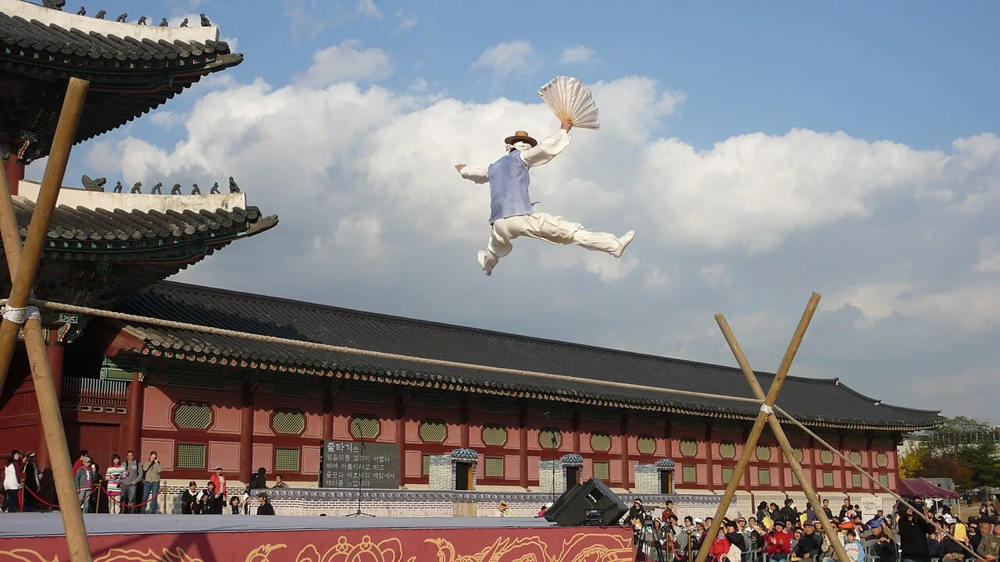
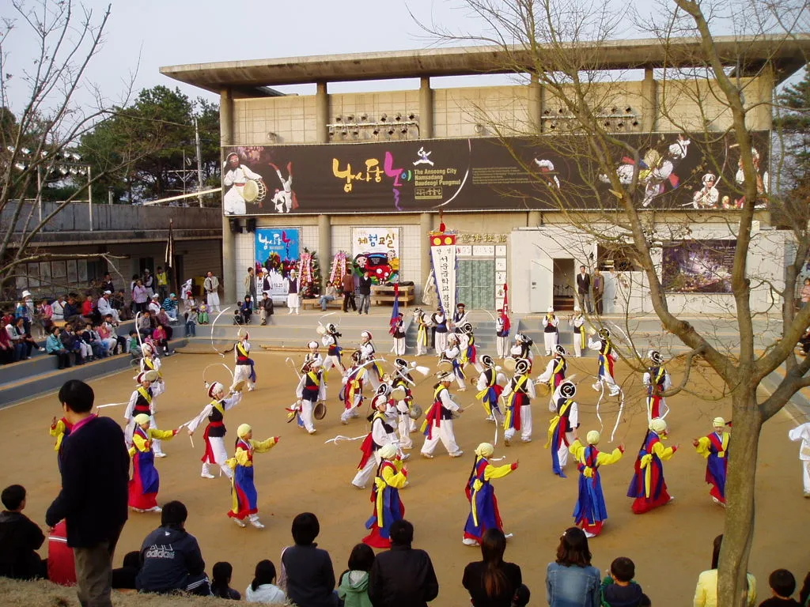
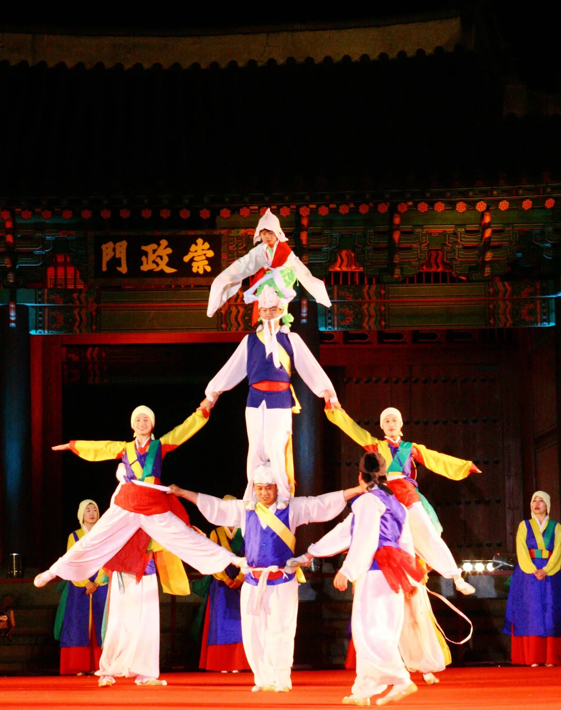
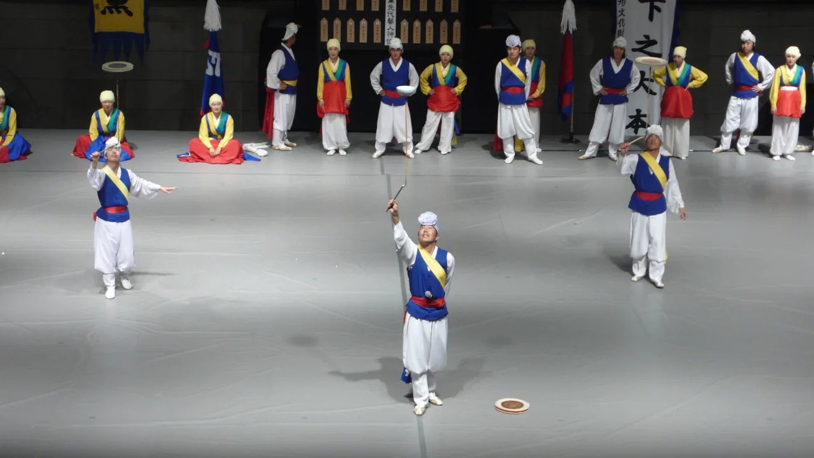
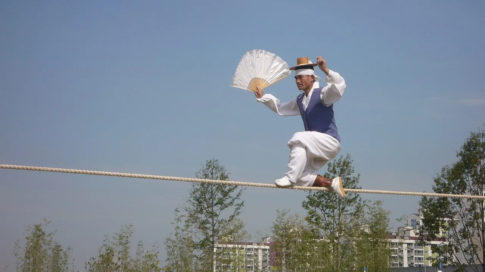
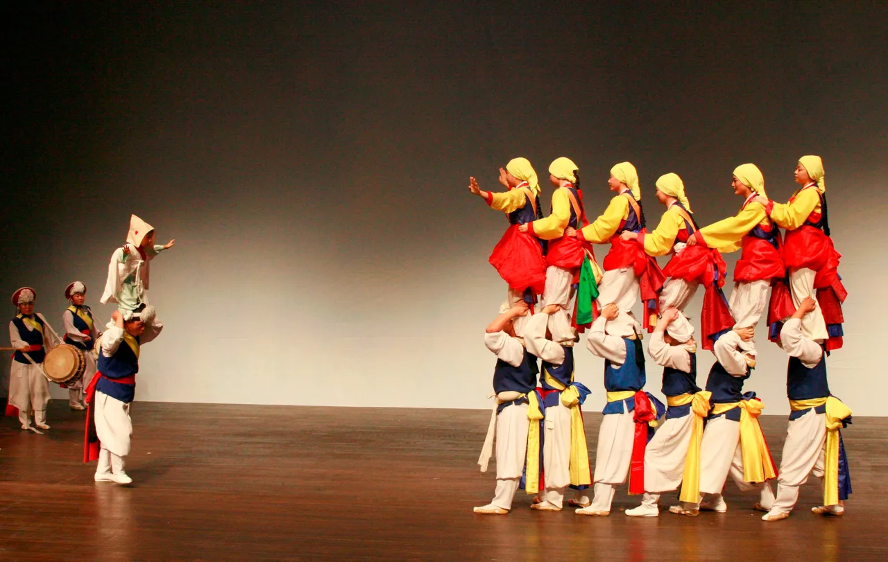
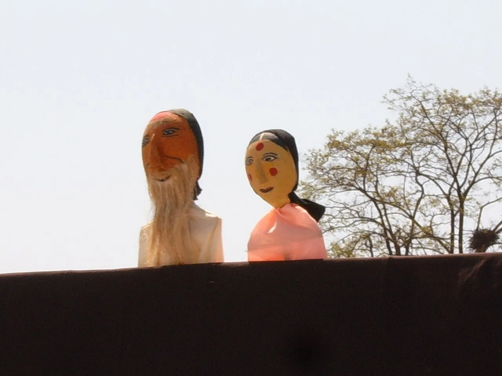
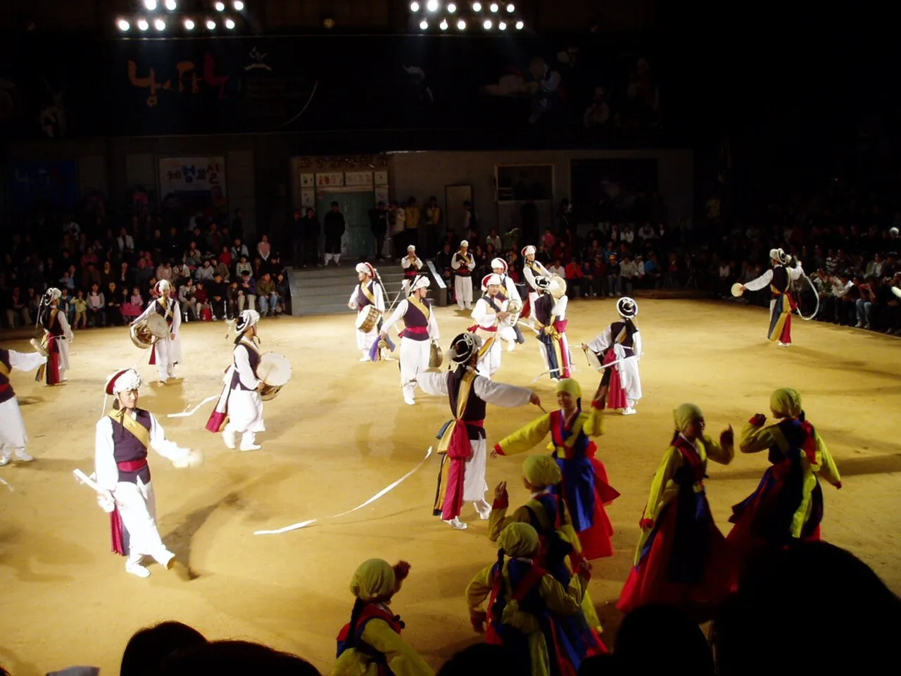

▲ 남사당놀이 여섯 마당 중 하나인 '어름'(줄타기). 줄 위에서 재담과 곡예를 섞어 펼치는 이 놀이는 유네스코 인류무형문화유산 남사당놀이의 상징이다 (참고사진)
경기 안성은 유네스코 인류무형문화유산 남사당놀이의 본고장이다. 조선 후기 이 지역을 근거지로 삼았던 유랑 예인집단 남사당패는 전국을 떠돌며 풍물·줄타기·탈춤·인형극을 펼쳤고, 그 우두머리(꼭두쇠) 중에는 놀랍게도 열다섯 살에 자리에 오른 여성 예인 '바우덕이'가 있었다. 안성시는 매년 가을 이 역사를 기려 '안성맞춤 남사당 바우덕이축제'를 연다. 2026년에는 10월 2일부터 5일까지 나흘간, 안성맞춤랜드와 안성천 일원에서 열린다. 축제 일정과 프로그램, 바우덕이의 실화, 남사당놀이 여섯 마당, 가는 법과 연계 관광지까지 방문 전 확인할 정보를 순서대로 정리했다.
1. 2026년 축제 일정 — 10월 1일 전야제, 2~5일 본축제

▲ 안성 남사당 바우덕이풍물 야외 공연 현장. 현수막에 'The Anseong City Namsadang Baudeogi Pungmul'이 적혀 있다 ⓒ Wikimedia Commons(참고사진)
2026 안성맞춤 남사당 바우덕이축제는 10월 1일(목) 전야제로 막을 올린다. 이날 저녁 7시부터 8시까지는 (구)새벽시장~안성식자재마트~내혜홀광장 구간에서 풍물단과 K-POP 댄스팀 등 12개 참가팀이 참여하는 길놀이 퍼레이드가 펼쳐지고, 이어 오후 8시부터 10시까지 내혜홀광장에서 CIOFF(국제민속예술축전기구) 해외공연단과 남사당풍물단의 축하공연으로 전야제가 진행된다. 전야제 전에는 바우덕이를 기리는 추모제도 함께 열린다. 본축제는 10월 2일(금)부터 5일(월)까지 나흘간 안성맞춤랜드와 안성천 일원에서 이어지며, 전야제 당일인 10월 1일 오후 4시부터 9시까지는 행사장 인근 교통이 통제되고 셔틀버스가 운행될 예정이다.
안성시청 축제포털에서 2026 축제 상세일정 확인 가능2. 열다섯 살 여성 꼭두쇠 — 바우덕이는 실존 인물이다
축제 이름의 주인공 바우덕이(본명 김암덕金岩德)는 1848년 안성에서 태어난 실존 인물이다. 다섯 살에 아버지를 여의고 남사당패에 맡겨져 자라면서 소고춤과 줄타기 등 기예를 익혔고, 열다섯 살이던 1863년 무렵 남사당패의 우두머리인 '꼭두쇠'로 선출됐다. 이는 남성 중심의 유랑 예인 집단에서 여성이 수장에 오른 사실상 유일무이한 사례로 꼽힌다. 바우덕이는 뛰어난 기예로 안성 남사당패를 전국구 공연 집단으로 키워냈고, 1865년에는 경복궁 중건 공사에 지친 노역자를 위로하기 위해 흥선대원군이 남사당패를 불러들인 자리에서 소고와 선소리로 큰 호응을 얻어 고종과 흥선대원군으로부터 정3품에 해당하는 옥관자를 하사받았다는 기록이 전해진다. 이후에도 전국을 떠돌며 공연을 이어가다 폐병을 얻어 1870년, 스물세 살의 나이로 세상을 떠났다. '조선 최초의 여성 아이돌'이라는 수식어가 붙는 이유다.

▲ 궁궐을 배경으로 펼쳐진 남사당 계열 곡예 공연. 바우덕이가 활동하던 시절에도 이런 화려한 곡예가 남사당패의 흥행 비결이었다 ⓒ Wikimedia Commons(참고사진)
3. 남사당놀이 여섯 마당 — 유네스코가 인정한 유랑 예인의 기예

▲ 남사당놀이 여섯 마당 중 '버나'(대접 돌리기) 공연 장면 ⓒ Wikimedia Commons(참고사진)
안성남사당놀이는 국가무형유산으로 지정돼 있으며, 2009년에는 남사당놀이 전체가 유네스코 인류무형문화유산으로 등재됐다. 여섯 가지 놀이(마당)로 구성되는데, 순서와 특징은 다음과 같다.
| 순서 | 명칭 | 내용 |
|---|---|---|
| 1 | 풍물 | 꽹과리·장구·북 등으로 구성된 농악. 20~30명이 참여하는 여섯 마당의 중심 놀이 |
| 2 | 버나 | 대접이나 접시를 막대 위에 올려 돌리는 묘기. 대접돌리기라고도 부른다 |
| 3 | 살판 | 맨몸으로 펼치는 땅재주(텀블링)와 곡예. '잘하면 살고 못하면 죽는다'는 뜻에서 이름이 유래했다는 설이 있다 |
| 4 | 어름 | 3m 높이 외줄 위에서 재담을 주고받으며 걷고 뛰는 줄타기 |
| 5 | 덧뵈기 | 탈을 쓰고 하는 마당놀이로, 풍자와 해학이 담긴 탈춤 |
| 6 | 덜미 | 인형의 목덜미를 잡고 조종한다는 뜻에서 이름 붙은 한국 고유의 인형극(꼭두각시놀음) |

▲ 부채로 균형을 잡으며 외줄을 걷는 줄광대. 어름은 재담과 곡예가 함께 어우러져 여섯 마당 중에서도 특히 인기가 높다 ⓒ Wikimedia Commons(참고사진)
4. 2026 주요 프로그램 — 바우덕이 시그니처쇼부터 축산물 구이존까지

▲ 살판(땅재주) 계열의 곡예를 응용한 무동(어깨 위 서기) 공연. 남사당놀이는 아슬아슬한 곡예 요소가 많아 아이들도 눈을 떼지 못한다 ⓒ Wikimedia Commons(참고사진)
2026년 축제에서는 전통 공연뿐 아니라 다양한 체험·먹거리 프로그램이 함께 운영된다. 확인된 주요 프로그램은 다음과 같다.
| 프로그램 | 내용 |
|---|---|
| 바우덕이 테마파크 | 남사당놀이 여섯 마당을 직접 체험해보는 체험형 프로그램 |
| 바우덕이 시그니처쇼 | 언어 장벽 없이 즐기는 야간 공연 |
| 세계문화유산 마스터클래스 | CIOFF 해외공연단이 참여하는 국제 교류 무대 |
| 쌍줄타기 공연·전통연희 페스티벌 | 어름(줄타기)을 포함한 전통연희 공연 무대 |
| 더 넥스트 바우덕이 | 차세대 공연자 발굴 무대 |
| 안성문화장 페스타 | 전국 문화장인의 공예품을 소개하는 장터 |
| 축산물 구이존 | 안성 한우·돼지고기·오리고기를 직접 구워 먹는 먹거리존 |
정확한 시간별 프로그램표는 개막이 가까워지며 공식 채널에 순차 공개되므로, 관심 있는 공연이 있다면 방문 직전 재확인이 필요하다.
5. 가는 법·주차 — 경부고속도로 안성IC, 안성맞춤랜드

▲ 남사당놀이 여섯 마당 중 마지막인 '덜미'(꼭두각시놀음)에 쓰이는 전통 인형들 ⓒ Wikimedia Commons(참고사진)
축제 주 무대인 안성맞춤랜드는 경기도 안성시 보개면 남사당로 198에 있다. 2012년 문을 연 시민공원으로, 상설 남사당공연장 외에도 천문과학관·공예문화센터·안성맞춤캠핑장·사계절썰매장 등을 함께 갖추고 있다. 서울 등 수도권에서는 경부고속도로 안성IC를 이용해 접근하는 것이 가장 일반적이며, 평시에는 안성맞춤랜드 자체 주차장을 이용할 수 있다. 다만 축제 기간에는 방문객이 몰려 주차 공간이 부족해질 수 있고, 전야제 당일(10월 1일 16:00~21:00)에는 행사장 인근 도로가 통제되고 셔틀버스가 운행될 예정이므로 대중교통이나 셔틀버스 이용을 함께 고려하는 것이 좋다. 정확한 셔틀버스 노선과 임시 주차장 위치는 축제 임박 시 공식 채널에 공지된다.
안성남사당공연장 홈페이지에서 상설공연 정보 확인 가능축제 기간이 아니더라도 안성남사당공연장에서는 매주 주말 상설 공연이 열려, 평소에도 남사당놀이를 감상할 수 있다. 촬영에는 별도 신청 절차가 있는 만큼 사전 확인이 필요하다.
6. 안성 연계 여행 — 안성맞춤박물관·서일농원·안성팜랜드, 그리고 안성 특산물

▲ 야간 풍물 공연 무대. 안성 남사당 공연은 낮 공연뿐 아니라 밤에도 열려 분위기가 사뭇 다르다 ⓒ Wikimedia Commons(참고사진)
바우덕이축제만 보고 돌아가기엔 안성은 볼거리·먹거리가 풍부한 지역이다. 안성의 특산품인 유기(놋그릇)를 모아 전시하는 안성맞춤박물관, 전통 한옥 정원과 한식 레스토랑을 함께 갖춘 서일농원, 동물 체험과 계절 꽃밭으로 유명한 안성팜랜드가 대표적인 연계 코스로 꼽힌다. 안성팜랜드는 안성IC에서 멀지 않은 거리에 있고 주차 공간도 넉넉해, 축제 방문과 함께 하루 일정으로 묶기 좋다.
안성은 예로부터 품질 좋은 유기 산지로 유명해 '안성맞춤'이라는 말 자체가 이 지역 장인들이 만든 맞춤 유기에서 유래했다는 설이 널리 알려져 있다. 쌀 또한 지역 대표 특산물로, '안성마춤쌀'이라는 브랜드로 유통되며 미질이 좋기로 이름나 있다. 축제 기간 안성문화장 페스타나 인근 로컬푸드 매장에서 이런 지역 특산품을 함께 둘러볼 수 있다.
| 항목 | 내용 |
|---|---|
| 축제명 | 2026 안성맞춤 남사당 바우덕이 축제 |
| 기간 | 전야제 10월 1일(목), 본축제 10월 2일(금)~5일(월) |
| 장소 | 안성맞춤랜드, 안성천 일원(경기 안성시 보개면 남사당로 198 일대) |
| 교통통제 | 10월 1일 16:00~21:00, 셔틀버스 운행 예정 |
| 접근 | 경부고속도로 안성IC 이용 |
| 연계 관광지 | 안성맞춤박물관, 서일농원, 안성팜랜드 |
| 지역 특산물 | 안성 유기(놋그릇), 안성마춤쌀 |
| 문의 | 바우덕이축제 031-678-5414 / 안성남사당공연 031-678-2518 |
✅ 안성 바우덕이축제, 가기 전 체크리스트
· 2026년 전야제 10월 1일(목), 본축제 10월 2일(금)~5일(월), 안성맞춤랜드·안성천 일원
· 축제 이름의 주인공 바우덕이는 1848년 안성 출생 실존 인물, 15세에 남사당패 최초·유일 여성 꼭두쇠로 선출
· 1865년 경복궁 공연으로 고종·흥선대원군에게 옥관자 하사, 1870년 23세로 별세
· 남사당놀이는 풍물·버나·살판·어름·덧뵈기·덜미 여섯 마당으로 구성, 2009년 유네스코 인류무형문화유산 등재
· 2026년 프로그램은 바우덕이 시그니처쇼·쌍줄타기·안성문화장 페스타·축산물 구이존 등
· 10월 1일 16:00~21:00 교통통제·셔틀버스 운행 예정, 경부고속도로 안성IC로 접근
· 안성맞춤박물관·서일농원·안성팜랜드와 묶어 하루 코스로 즐기기 좋음, 특산물은 안성 유기·안성마춤쌀
· 상세 프로그램·주차·셔틀 정보는 방문 전 안성시청 축제포털에서 재확인 필요